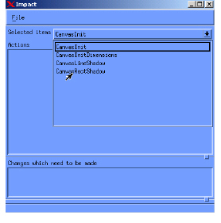
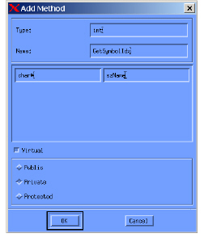
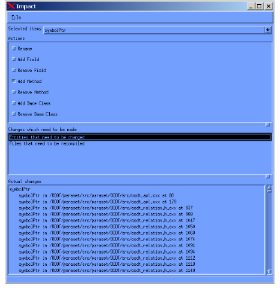

To perform an Impact Analysis
1 In the model browser, select the entities you might want to change.
2 Select Tools > Impact.
DIScover displays the selected entities at the top of the Impact window in a drop-down list, and lists available actions for the selected entity in the Actions section.
3 From the Selected Items list, choose the entity you want to view or propose changes for.

4 To propose a change, select the check box beside the desired change type.
A dialog box appears for the specific change you want to make. For more information on the available change types, see Impact Analysis Options.
5 Complete the dialog box with your proposed change information. For example, if you select an Add Method change, a dialog box appears allowing you to specify the proposed type, name, arguments, and permissions.

6 Click OK.
The Impact dialog box displays an enabled check box in the Actions section for each change type you modified.
Important: Impact Analysis only displays proposed and available changes, and does not initiate the changes you make. To make changes to your source code, use your IDE.
The Changes which need to be made section lists both files and entities that need to be modified in order for the proposed change to be complete and correct. It describes possible changes and/or possible conflicts and warnings.
The Actual changes section lists the exact changes (file names, line number, and entity name) in your source code that you need to make in order to achieve the desired results.

7 To examine affected entities and files, select an item in the Changes which need to be made section.
8 To propose more changes to your source code, repeat this procedure for each entity in your impact diagram.
Once you have explored your options, you can print a complete report of your proposed changes. For more information, see Impact Analysis Options.
Note: If you make an error when proposing a change for a specific change type, you can clear your modifications. Make sure you are in the Impact diagram view, and then select the check box to reopen the change type option dialog box for the change type you want to correct.